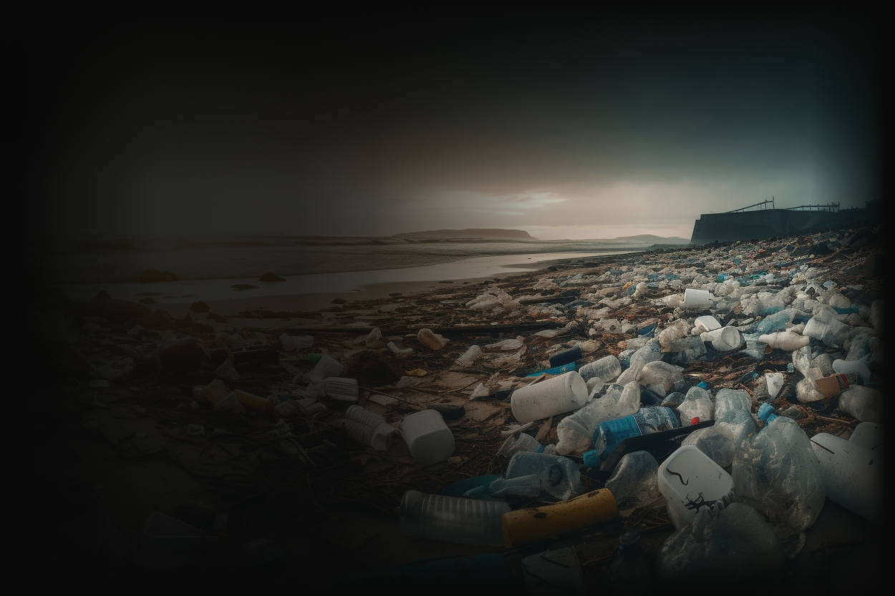

Dampak pencemaran laut merujuk pada konsekuensi negatif yang ditimbulkan akibat masuknya zat-zat berbahaya atau limbah ke perairan laut. Pencemaran laut dapat memiliki efek yang merusak terhadap lingkungan, organisme hidup, dan manusia.

/Pantai Utara DKI Jakarta, Indonesia
Pencemaran Laut di Pantai Utara DKI Sangat Mengkhawatirkan
Pada Mei 2017, Pantai Utara DKI Jakarta mengalami pencemaran air yang parah akibat sampah, menyebabkan perubahan warna air laut menjadi keruh dan kotor. Sampah-sampah seperti plastik, styrofoam, dan limbah organik terlihat mengapung di permukaan laut dan terdampar di pantai. Pemerintah dan masyarakat segera merespons dengan melakukan upaya pembersihan dan meningkatkan kesadaran akan pentingnya menjaga kebersihan lingkungan pantai. Kejadian ini menjadi peringatan penting akan perlunya konservasi dan pengelolaan yang baik untuk menjaga kelestarian lingkungan laut di wilayah tersebut.
/Pantai Kampung Melayu, Kepulauan Riau
Pantai di Batam Tercemar Limbah Minyak Hitam Pekat
Pada Rabu, 3 Mei 2023, terjadi pencemaran limbah minyak hitam pekat di pantai Kampung Melayu, Batu Besar di Batam. Limbah tersebut menyebabkan bau yang tidak sedap dan telah mengganggu warga setempat. Petugas kepolisian dan instansi terkait telah merespons kejadian ini. Harapan warga adalah agar pemerintah mengambil tindakan serius untuk menyelesaikan masalah ini yang juga mengganggu nelayan dan sektor pariwisata. Masyarakat dan pemerintah bersatu dalam upaya mengatasi krisis lingkungan ini, mencari solusi yang berkelanjutan guna melindungi pantai Batam dari ancaman pencemaran limbah minyak di masa depan.
/Laut Nias Utara, Sumatera Utara
Tumpahan Aspal Kapal Tanker Cemari Laut, Penyu Terancam Punah
Pada jarak sekitar 70 kilometer dari Pulau Nias, sebuah kapal tanker mengalami kebocoran dan menyebabkan tumpahan aspal yang mencemari laut. Kejadian ini menyebabkan matinya sejumlah penyu yang hidup di perairan sekitar Nias. Aspal yang tumpah mencemari habitat mereka dan mengganggu sistem pernapasan serta sumber makanan. Pemerintah setempat segera merespons kejadian tersebut dan melakukan upaya penanganan. Kapal tanker yang bocor tersebut juga sedang dalam proses peninjauan lebih lanjut oleh otoritas maritim untuk mengetahui penyebab pasti kebocoran dan apakah ada pelanggaran yang terkait dengan kejadian ini.

.png)